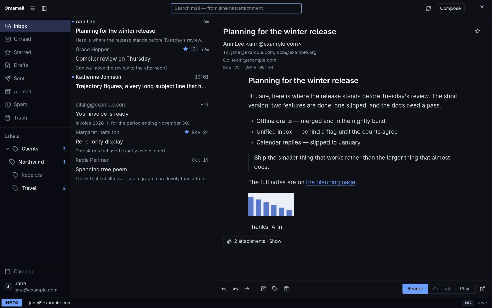
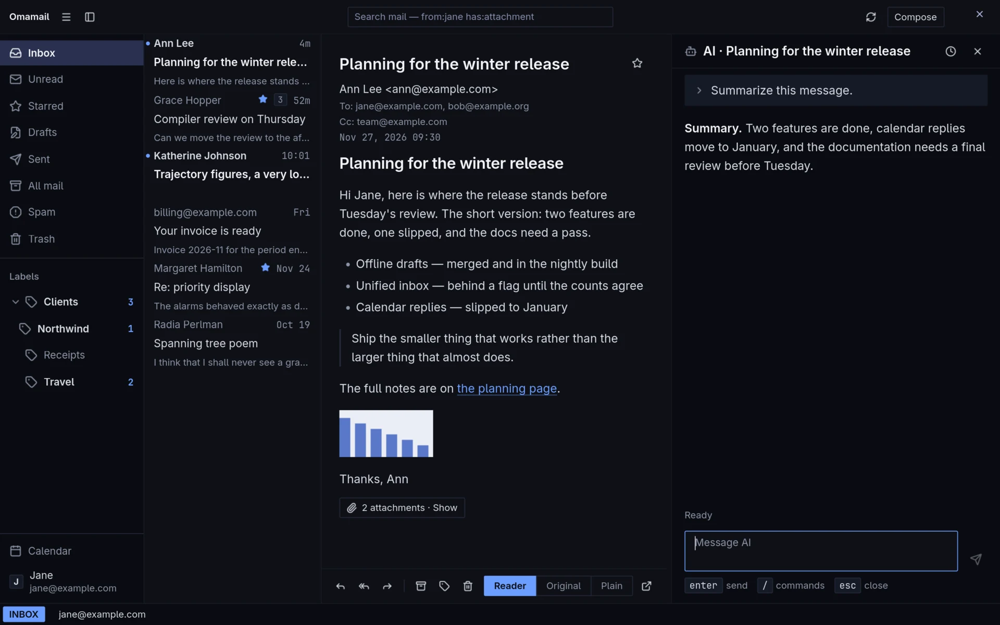
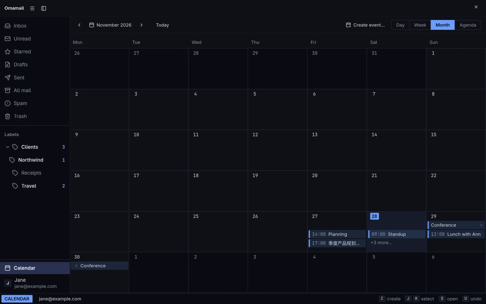
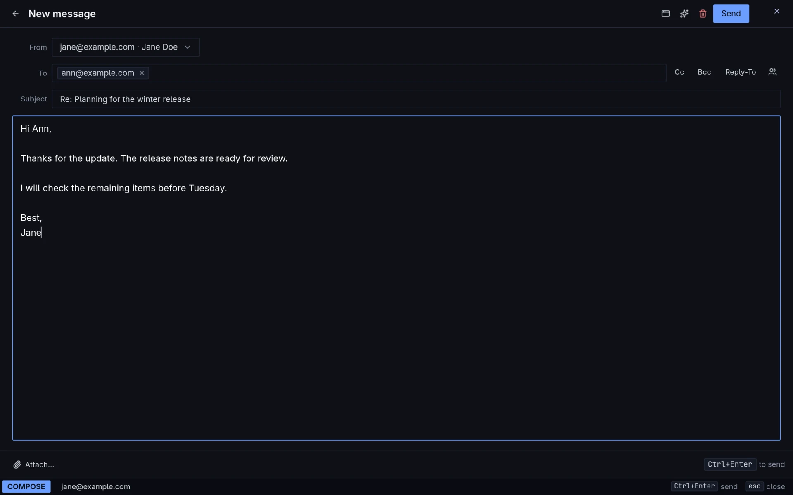
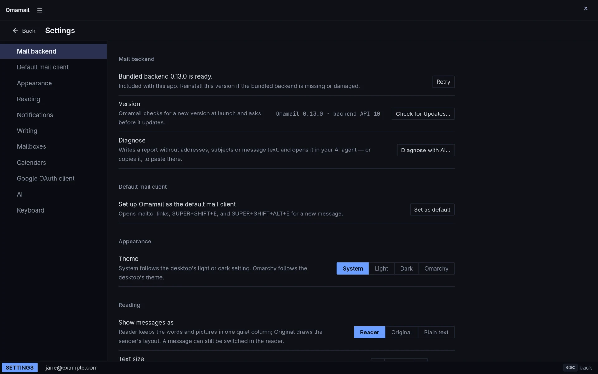
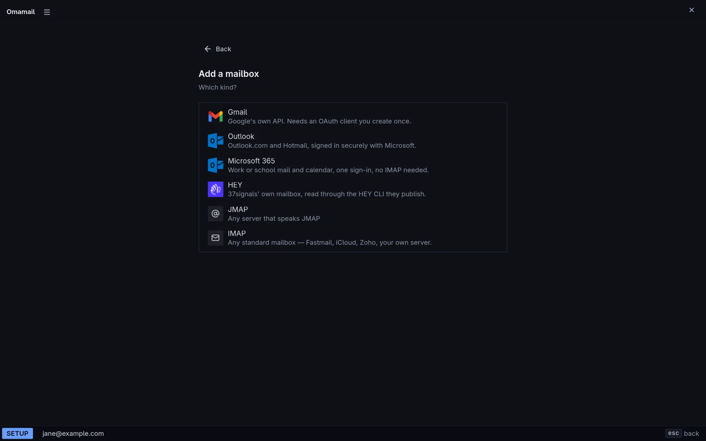
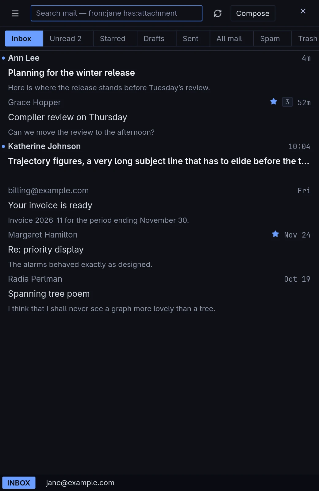
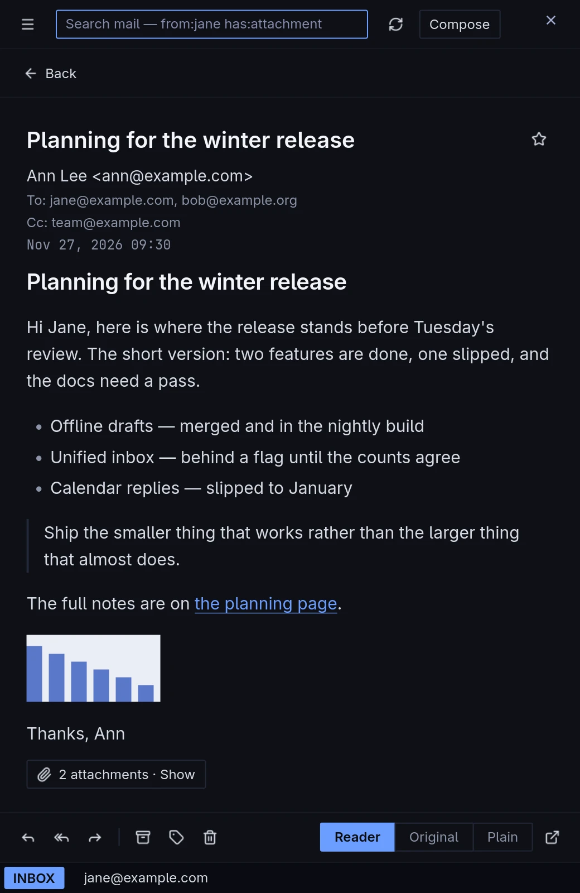
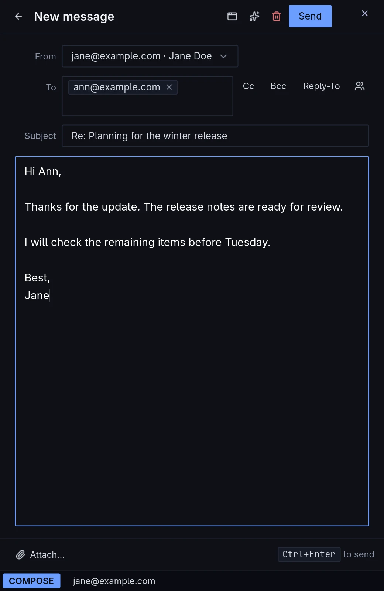

01 What it looks like
Three columns when there is room, one when there is not.
FULL WINDOW






MINI SIZE



02 Mailboxes it can open
Six kinds of mailbox, one window. What a mailbox cannot do, the window does not offer.
Gmail
SIGN IN WITH GOOGLELabels, conversations, Gmail's own search syntax, and a report-spam that Google actually learns from.
Outlook
SIGN IN WITH MICROSOFTOutlook.com, Hotmail, Live and MSN over OAuth — Omamail never sees the account password.
Microsoft 365
A WORK OR SCHOOL ACCOUNTMail and calendar over Microsoft Graph with one sign-in, no IMAP. It needs an app registration in your organisation first.
HEY
THROUGH THE HEY CLINo address and no password — the HEY CLI 37signals publish holds the token.
JMAP
AN ADDRESS AND A PASSWORDAny server that speaks JMAP, found from your address's domain or from a server you name.
IMAP
AN ADDRESS AND AN APP PASSWORDFastmail, iCloud, Yahoo, Zoho, GMX, Proton through its Bridge, or a server of your own.
03 What it does
Designed to sit inside Omarchy, not to look like a web app in a window — and just as much at home on macOS and Windows.
- 01Keyboard-firstMove, archive, star, reply, compose, switch mailbox, switch account, search.
- 02Several mailboxesEach account has its own inbox and cache, so switching shows the last list at once. All mailboxes puts them in one list.
- 03New mail notificationsWhile Omamail is open, new mail in an inbox brings a desktop notification; clicking it opens the message. Settings can turn it off.
- 04A calendarDay, week, month and agenda views for Google, Microsoft and iCloud accounts, with events you can create and edit.
- 05Invitations you can answerRead out of the message's own calendar part and drawn as a meeting, in your clock rather than the organiser's. Yes, Maybe and No answer the organiser.
- 06Off a list in one clickA newsletter that supports one-click unsubscribing is unsubscribed from without leaving the window. Nothing is ever fetched from a sender's address until you ask.
- 07Images stay blockedLoading a sender's pictures tells them the mail was read, from which address and when. Show images loads them for that one message; Always show is your choice, and Settings takes it back.
- 08AttachmentsOpen an attachment or save it to Downloads. Pictures open in a viewer that pages through every image in the message.
- 09Your themeSystem, Light, Dark or Omarchy. With Omarchy, colours and type come from the active Omarchy theme, so the mailbox changes the moment the desktop does.
- 10In the system keychainTokens and passwords live in the macOS Keychain, the Secret Service on Linux (GNOME Keyring, for one) or Windows Credential Manager — never in a config file, never on a command line.
- 11An AI assistant you approveSummarise a message, ask about it or draft a reply with the OpenCode, Codex or Claude you already have. A draft is only a proposal: Omamail sets the recipients, and only your press sends it.
- 12mailto: linksOn Linux, Settings › Default mail client makes Omamail open
mailto:links. On Omarchy it also takes SUPER+SHIFT+E, and SUPER+SHIFT+ALT+E for a new message. - 13Undo sendOutgoing mail is delayed by ten seconds so you can cancel it with Alt+Z or Undo. Set it to 0 to send immediately.
- 14Updates itselfChecks for a new version at launch and asks before updating. Check for Updates... is in the app menu and in Settings. The update manifest is signed.
04 Keys
The keyboard belongs to the application, and the context says what a key means where. Every binding lives in one table; the shortcut sheet and the status-bar hints render from it. On macOS, Ctrl in this table is Command.
| Key | What it does |
|---|---|
| j/k Shift+J/Shift+K | Move down / up; scroll the open message down / up |
| Right/Left | Open the selected message / return to the list |
| Returnoro | Open the selected message |
| Escape | Back, or close the window |
| e | Archive |
| d | Move to trash |
| s | Star or unstar |
| Shift + I/Shift + U | Mark read / unread |
| r/a/f | Reply, reply all, forward |
| c | Compose |
| Ctrl + Return | Send |
| Alt + Z | Undo send |
| / | Search |
| Ctrl + 1 … Ctrl + 9 | The mailbox with that number |
| Alt + 1 … Alt + 0 | The email account with that number |
| Alt + A | Switch account |
| Alt + C | Switch between mail and calendar |
| Alt + G | Ask AI about the message or draft |
| Ctrl + =/Ctrl + -/Ctrl + 0 | Zoom the message body, or reset it |
| F5/Ctrl + R | Check for mail |
| Ctrl + , | Open settings |
| ? | Every shortcut |
05 What it does not do
No browser engine for mail. A message opens in a reading view Omamail builds itself: headings, paragraphs, lists and links in your own type at a readable measure, with none of the sender's presentation in it. The sender's own layout is one click away. Both are drawn by the app's own text view from a structure the Rust core has already cleaned: no scripts, no style sheets, and nothing in a message can reach the network on its own.
It will not knock on your own network's door. Images pointed at this machine or at the network around it — loopback, private addresses, .local names, file: — are never fetched at all, however often you ask.
It does not run in the background. Closing the window quits Omamail, so it checks for mail and sends notifications only while it is open. There is no tray icon.
06 Install
Desktop app
Each installer checks the download against the release's SHA256SUMS before it replaces an installed copy. It also replaces an install of Omamail 0.12 or earlier, keeping your accounts and settings. From then on Omamail updates itself. For a specific version, another location or removal, see the installation guide.
$ curl -fsSL https://huacnlee.github.io/omamail/install.sh | sh
Installs Omamail.app in ~/Applications. The app is ad hoc signed, not notarized.
$ curl -fsSL https://huacnlee.github.io/omamail/install.sh | sh
Installs in ~/.local/share/omamail with a desktop entry and an omamail-app command in ~/.local/bin. GTK and WebKitGTK come from gtk4 and webkitgtk-6.0 on Arch, libgtk-4-1 and libwebkitgtk-6.0-4 on Debian and Ubuntu.
> irm https://huacnlee.github.io/omamail/install.ps1 | iex
Installs for the current user in %LOCALAPPDATA%\Programs\Omamail with a Start menu shortcut.
Run from source
With the nsh command-line tool and Rust installed, run this at the repository root:
$ make run
Omarchy bar entry (optional)
On Omarchy, this plugin puts an envelope in the bar. With Omamail installed, clicking it opens the app. Without it, a dot shows beside the envelope, the tooltip says so, and clicking opens this page to install it. It reads no mail itself. The first time it loads, it hands the old plugin's settings to the app to import on its first launch.
INSTALL
$ omarchy plugin add https://github.com/huacnlee/omamail.git --enable
If the old plugin is installed, updating it turns it into this entry.
REMOVE
$ omarchy plugin remove omamail
That takes the bar entry only. The Omamail app, your accounts and your settings stay. The one file the plugin writes is ~/.config/omamail/plugin-settings.json, the settings it hands to the app.